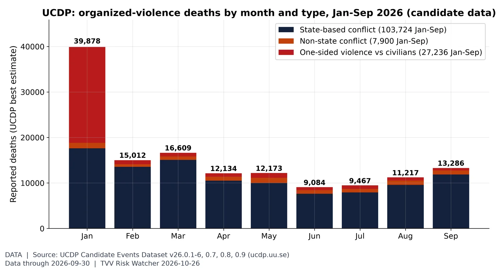
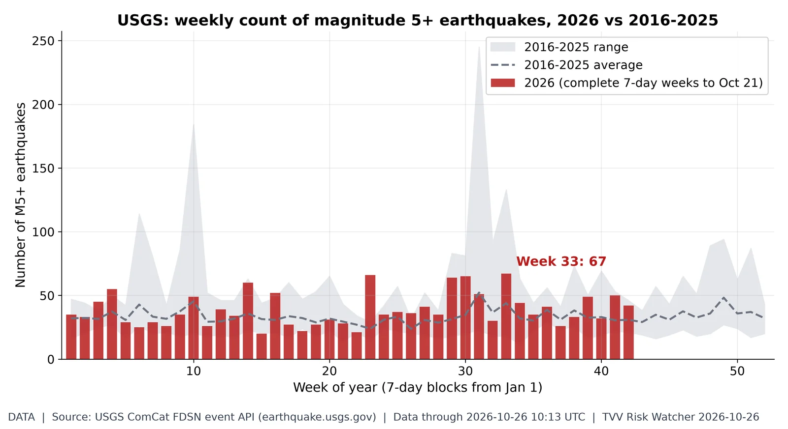
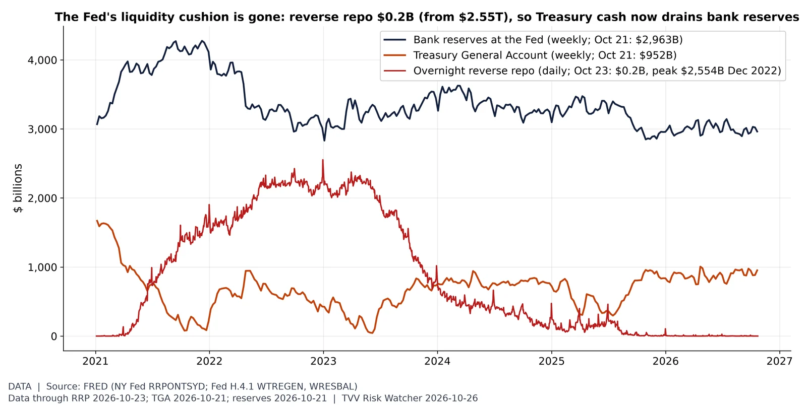
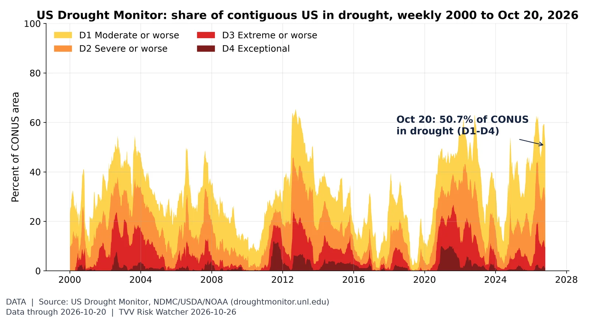
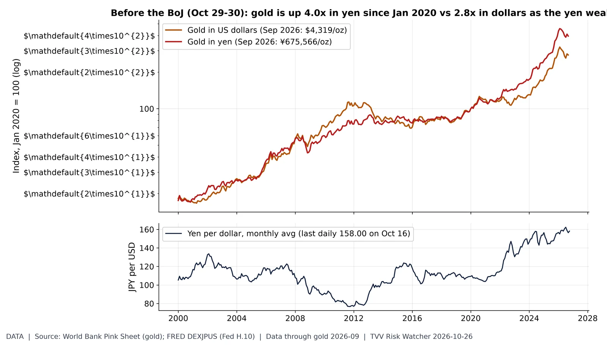
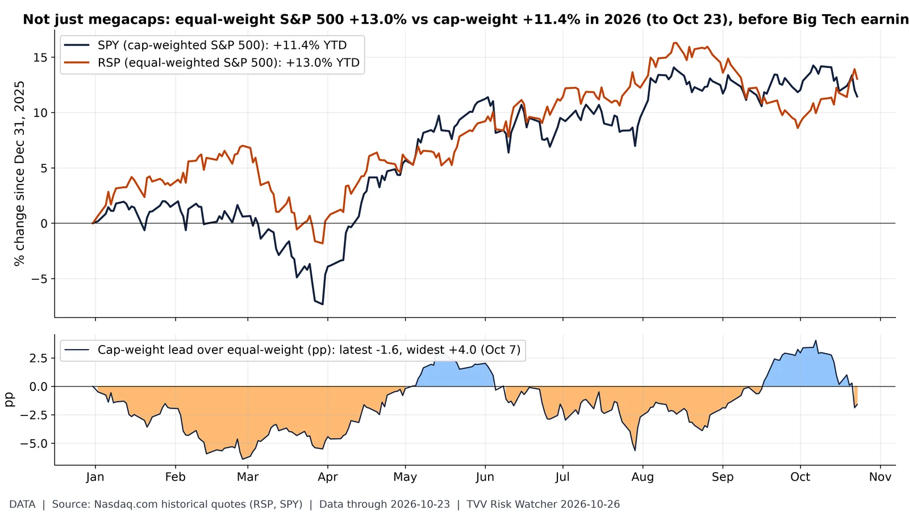
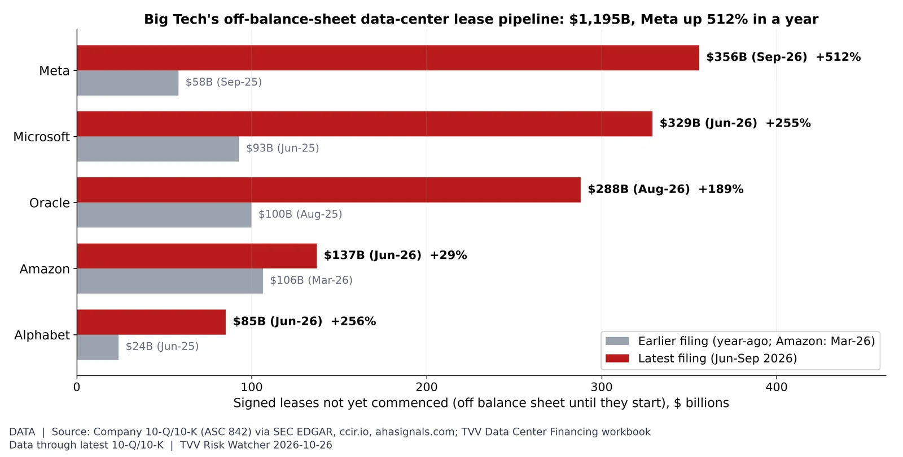
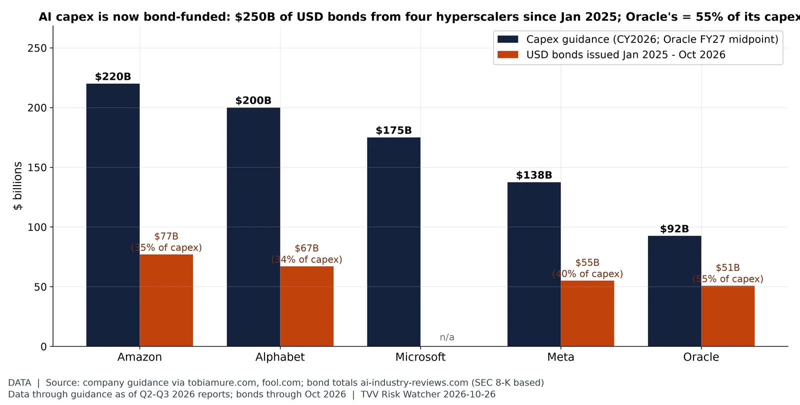

Where geopolitical risk is concentrated. In September 2026, United States (3.91% of articles, vs 3.61% in 2025), Israel (1.61%) and Russia (1.48%) led the Caldara-Iacoviello country GPR rankings. Source: https://www.matteoiacoviello.com/gpr.htm

Violence against civilians in context. UCDP's candidate events record 138,860 deaths Jan-Sep 2026, 27,236 of them in one-sided violence against civilians (top: Iran 19,901, Nigeria 1,884, DR Congo (Zaire) 1,357). January's 39,878 is mostly UCDP's estimate for the Iranian government's Jan 8 killings of civilians (state, not terrorist, violence); September 13,286. Candidate data are preliminary. Source: https://ucdp.uu.se/downloads/index.html#candidate

Weekly M5+ quake count. 2026 has 1,675 M5+ quakes through Oct 26 vs a 2016-25 average of 1,414 by this date (range 1,216-1,905); the busiest 2026 week was week 33 with 67. Source: https://earthquake.usgs.gov/fdsnws/event/1/
Where the AI build-out is, and how it is financed. TVV's project file tracks 74 large AI data-center campuses worldwide, 52 in the US (42.1 GW of disclosed capacity). Disclosed project financing totals $194B for US sites; 10 US campuses use SPV bonds or off-balance-sheet JVs ($104B, led by Meta Hyperion $27.3B and El Paso $12.5B). Locations approximate. Source: https://epoch.ai/data/data-centers

The liquidity buffer is empty. The Fed's overnight reverse repo facility held $0.2B on Oct 23, down from $2,554B (Dec 30, 2022). The Treasury's cash account was $952B (Oct 21) and bank reserves $2,963B (Oct 21); with the RRP cushion spent, further TGA rebuilds or QT come straight out of reserves. FOMC Oct 28. Source: https://fred.stlouisfed.org/series/RRPONTSYD

Critical Water Shortage, US view. 50.7% of the contiguous US was in drought (D1-D4) on the map valid Oct 20, higher than in 91% of weeks since 2000; 9.4% was extreme or worse. Source: https://droughtmonitor.unl.edu/DmData/DataDownload.aspx

Gold in yen: the weak-currency hedge. World Bank monthly gold averaged $4,319/oz in September 2026, 2.8x Jan 2020; priced in yen (FRED monthly-average JPY) it was ¥675,566/oz, 4.0x, because the dollar bought 156.4 yen vs 109.3 in Jan 2020. Latest daily rate 158.00 (Oct 16). BoJ decides Oct 29-30. Source: https://www.worldbank.org/en/research/commodity-markets

The average stock is beating the megacaps. Through Fri Oct 23, SPY (cap-weighted) is +11.4% in 2026 vs +13.0% for RSP (equal-weighted), so cap-weight trails by 1.6 pp (cap-weight lead peaked at +4.0 pp on Oct 7; deepest lag -6.4 pp on Feb 27). The equal-weight lead means 2026 gains are broader than the megacap story; Big Tech results Oct 28-29 test whether cap-weight catches up or falls further behind. Source: https://www.nasdaq.com/market-activity/etf/rsp/historical
The US-China AI model race. Epoch's database lists 88 notable AI models for 2026 to Oct 12: 53 from US organizations and 29 from Chinese ones (2025: 62 US, 33 China, 107 total). Recent years fill in as Epoch adds models. Source: https://epoch.ai/data/ai-models

The hidden AI lease bill. Signed but not-yet-commenced leases (ASC 842, mostly data centers) total $1,195B across Meta, Microsoft, Oracle, Amazon and Alphabet in their latest filings; for the four with year-ago figures they rose from $275B to $1,058B. Meta $356B (+512%), Microsoft $329B, Oracle $288B (+189%). These obligations sit outside reported debt until each lease starts. Big Tech reports Oct 28-29. Source: https://www.sec.gov/Archives/edgar/data/1341439/000119312526389274/orcl-20260831.htm

Capex vs bonds before earnings. 2026 capex guidance: Amazon $220B, Alphabet $200B, Microsoft $175B, Meta $137.5B, Oracle $92.5B (FY27 midpoint). Amazon, Alphabet, Meta and Oracle sold $250B of USD bonds Jan 2025-Oct 2026; Oracle's $50.8B equals 55% of a year's capex (Meta's excludes $27.3B of Hyperion SPV notes). Earnings Oct 28-29. Source: https://ai-industry-reviews.com/research/ai-data-center-debt-financing-statistics-2026/